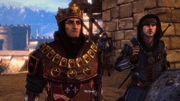
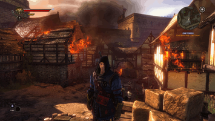
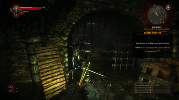
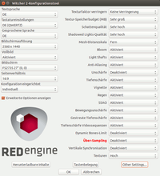

The Witcher 2 - Assassins of Kings
Dieser Artikel wurde für die folgenden Ubuntu-Versionen getestet:
Ubuntu 16.04 Xenial Xerus
Zum Verständnis dieses Artikels sind folgende Seiten hilfreich:
Die Spieleserie The Witcher basiert auf der Geralt-Saga, einer Romanreihe des polnischen Schriftstellers Andrzej Sapkowski. Die Bücher handeln vom Leben und den Abenteuern des Hexers Geralt von Riva. Die Entscheidungen im Spiel haben teilweise erheblichen Einfluss auf den Handlungsstrang.
Nach der Vereitelung des Attentats auf König Foltest steigt der Hexer Geralt in The Witcher 2 zu dessen engem Vertrauten auf und begleitet ihn zur Belagerung der Burg La Valette, deren Baron die unehelichen Kinder seiner Mutter und des Königs unter seiner Kontrolle hält. Doch warum findet sich Geralt nach der Belagerung plötzlich im Kerker wieder?
|  |
| König Foltest und Vernon Roche bei der Belagerung |
|  |
| Der Hexer Geralt von Riva vor brennenden Häusern |
|  |
| Geralt im Kampf mit einem Ertrunkenen |
Bezugsquellen¶
Die Linuxversion wird von gog.com (DRM-frei) und von Steam vertrieben. Es ist auch möglich, bei Drittanbietern eine Lizenz zu erwerben, die über eine der beiden Plattformen aktiviert werden kann.
Installation¶
Steam - Version¶
Die Installation der Steam- Version gestaltet sich einfach:
Dann navigiert man in seiner Spielebibliothek zum Eintrag für The Witcher 2, klickt auf Installieren und folgt den Anweisungen im sich öffnenden Fenster.
Sobald Steam das Spiel fertig heruntergeladen und installiert hat, kann man es über den Button Spielen starten.
gog.com - Version¶
Zuerst muss man das etwa 20 GB große Shell-Skript von gog.com herunterladen. Das Installationsskript wird später zusammen mit dem installierten Spiel über 50 GB belegen.
Installationsvoraussetzungen¶
Man muss selbst einige Abhängigkeiten von 32 Bit- Bibliotheken für die gog- Version auflösen, wenn man ein 64 Bit- System verwendet.
libgtk2.0-0:i386
libsdl2-2.0-0:i386 (universe)
libsdl2-image-2.0-0:i386 (universe)
gtk2-engines-murrine:i386
libatk-adaptor:i386
 mit apturl
mit apturl
Paketliste zum Kopieren:
sudo apt-get install libgtk2.0-0:i386 libsdl2-2.0-0:i386 libsdl2-image-2.0-0:i386 gtk2-engines-murrine:i386 libatk-adaptor:i386
sudo aptitude install libgtk2.0-0:i386 libsdl2-2.0-0:i386 libsdl2-image-2.0-0:i386 gtk2-engines-murrine:i386 libatk-adaptor:i386
Eigentliche Installation¶
Ist die Datei von gog.com fertig heruntergeladen, sollte man sie ausführbar machen. Das Programm muss nach dem Download noch ausführbar gemacht werden[4].
Nun öffnet man ein Terminal[3], navigiert zum Speicherort der Datei und führt folgenden Befehl aus:
./gog_the_witcher_2_assassins_of_kings_enhanced_edition*
Daraufhin öffnet sich ein Installationsdialog, den man durchgehen sollte. Standardmäßig wird ein Desktopsymbol und ein Eintrag im Starter erstellt.
Ist die Installation erfolgt, kann man das Spiel mit dem Starter "The Witcher 2: Assassins Of Kings - Enhanced Edition" oder dem entsprechenden Desktopsymbol starten.[2]
Hat man dagegen beide Haken im Installationsassistenten entfernt, kann das Spiel über die Datei start.sh im Terminal[3] gestartet werden.[2] Der Ordner, indem sich das Startskript befindet, ist standardmäßig ~/GOG Games/The Witcher 2 Assassins Of Kings Enhanced Edition.
Bedienung¶
 Nach dem Starten des Spiels erscheint zunächst ein Launcher. Dort kann man die Grafikqualität und die Steuerung konfigurieren.
Grafikoptionen¶
Besonders die Option "Über-Sampling" benötigt viel Rechenleistung/Grafikspeicher und sollte bei Leistungsproblemen zuerst deaktiviert werden. Unter "Other Settings..." kann die Auswahl der neuesten OpenGL- Version eine höhere Bildrate bewirken.
| Über-Sampling | Bei Aktivierung der Option wird das Spiel zuerst in einer höheren als der eingestellten Bildschirmauflösung berechnet und dann wieder auf diese herunter gerechnet. | |
Zudem ist es empfehlenswert, in der Konfigurationsdatei kleinere Anpassungen vorzunehmen, die nicht auf anderem Weg zugänglich sind.
| User.ini | |
| TextureMemoryBudget | Gibt an, wie viel Grafikspeicher für Texturen zur Verfügung gestellt wird. Hätte man beispielsweise eine AMD RX 480 mit 8GiB VRAM, würde ein Wert von 7680 7,5GiB bereitstellen. |
| MeshDistanceScale | Gibt an, in welcher Distanz bestimmte Objekte geladen werden. Beispielsweise erzielt ein Wert von 99.9 mit einer leistungsfähigen Grafikkarte gute Resultate und verringert das plötzliche Erscheinen von Texturen im Sichtbereich stark. |
Die Konfigurationsdatei User.ini befindet sich im Ordner ~/.local/share/cdprojektred/witcher2/GameDocuments/Witcher 2/config/ und kann mit folgendem Befehl editiert werden:
nano ~/.local/share/cdprojektred/witcher2/GameDocuments/Witcher\ 2/config/User.ini
Kampf¶
Auf seinen Abenteuern begegnet Geralt immer wieder Monstern und üblen Gestalten, die er bekämpfen muss. Dazu kann er Tränke, Fallen und Bomben herstellen, die ihn im Kampf unterstützen. Zudem verfügt er über eine hohe Mobilität, die der Spieler nutzen sollte.
Weiterhin stehen ihm die sogenannten Zeichen zur Verfügung, spezielle Fähigkeiten, die nur begrenzt eingesetzt werden können:
| Hexerzeichen | |
| Aard | Druckwelle, die Gegner zurück stößt und lähmt. |
| Yrden | Falle auf dem Boden. |
| Igni | Feuerwelle, die Gegner zurück stößt und lähmt. |
| Quen | Vorübergehendes Schutzschild. |
| Axii | Psychologische Einflussnahme, die Gegner verängstigt oder gar zu Verbündeten macht. |
Steuerung¶
| The Witcher 2 | |||
| Taste | Funktion | Taste | Funktion |
 | Interagieren, schneller Angriff, Plündern |  | Starker Angriff |
 | Laufen | Abrollen zum Ausweichen | |
| Q | Kampfbereitschaft, Zeichen wirken | E | Blocken |
| ⇧ | Langsam Gehen | Strg | Zeichen wählen, meditieren |
| J | Auftragsbuch öffnen | 3 | Zeichen schnell umschalten |
| 1 | Stahlschwert wählen | 2 | Silberschwert wählen |
| I | Inventar öffnen | M | Karte öffnen |
Problembehebung¶
Aufploppende Texturen¶
Das Aufploppen der Texturen lässt sich nur durch ein allgemeines Erhöhen der Sichtweite über die User.ini größtenteils verhindern, wie weiter oben im Artikel empfohlen. Gräser könnten trotzdem noch im Sichtbereich der Spielfigur plötzlich die Textur wechseln.
Infobox¶
| The Witcher 2: Assassins of Kings Enhanced Edition | |
| Genre: | Action-Rollenspiel |
| Sprache: |      |
| Veröffentlichung: | 17.05.2011 |
| Entwicklerstudio: | CD Projekt RED |
| Systemvoraussetzungen: | Zweikernprozessor, 4 GiB Arbeitsspeicher, AMD Radeon HD 6570/Intel HD Graphics 6000/Nvidia GeForce 9800 GT oder schnellere Grafikkarte, 25 GB freier Festspeicher |
| Medien: | Download |
| Läuft mit: | nativ |
- Erstellt mit Inyoka
-
 2004 – 2017 ubuntuusers.de • Einige Rechte vorbehalten
2004 – 2017 ubuntuusers.de • Einige Rechte vorbehalten
Lizenz • Kontakt • Datenschutz • Impressum • Serverstatus -
Serverhousing gespendet von